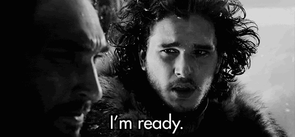
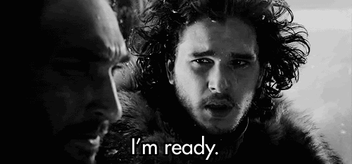

How I felt about leaving my job:


 

So. many. emotions.
I had been looking for a change in my job/career for a while. Working in marketing, I looked at marketing job descriptions and they all sounded like more of the same – exactly what I didn’t want to do.
I decided to take the part-time Javascript Workshop at Galvanize in February and for the first time in a long time I felt like I was using my brain, learning something, and I was actually excited to do the work! I’ve always liked making things so having something [digitally] “tangible” that I made felt like an accomplishment.
I enjoyed the program so much I decided now was the time and I took the leap. I really cannot wait to get learning and start my new career as a developer.
After completing the program, my hope is to join an enthusiastic team at a growing company. I’m keeping an open mind as to what that will specifically look like but I’m excited for the journey to unfold!